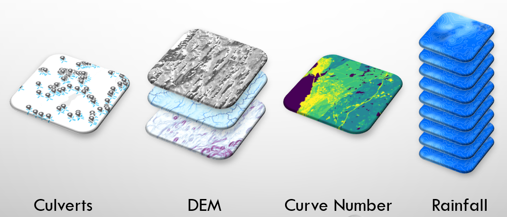

Overview
The calculators provided by the Culvert Toolkit rely on specific spatial datasets to derive location-specific parameters that are then used as inputs to stormwater runoff and culvert capacity models.
Types of Input Datasets
The section describes what, where, and how to acquire the various inputs required to run the tool.
Note that a number of these inputs require some basic competency in GIS to create, as they are not necessarily available off-the-shelf (depending on your area of interest).

NAACC culvert/crossing records
The culvert/crossing records available from NAACC provide the starting point for the analysis.
See Working with NAACC Culvert Data for more information.
Digital Elevation Model (DEM)
The DEM provides the data for determining what is upstream of a culvert/crossing, as well as some characteristics of that area that are important to calculating peak flow.
Sources for a DEM could be:
- Elevation raster
- Elevation TIN
- Elevation point clouds (i.e., from LiDAR)
From any of those sources, the analytical tools require one or more of the following rasters for your area of interest.
- slope
- flow direction
- flow length (optional)
See Digital Elevation Model-derived Data for more information.
Curve Number
The curve number represents the runoff potential of the contributing watershed above a culvert. It is derived from a combination of landcover and soil condition data.
Sources:
- Soils
- Landcover
- TR-55 Manual Table 2.1
See Digital Elevation Model-derived Data for more information.
Rainfall
Rainfall data is required in order to estimate peak flow.
See Getting NOAA Rainfall Data for more information.
Sources:
- NOAA rainfall rasters for your area of interest